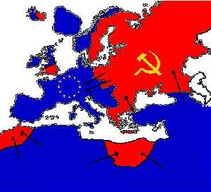

De: La Frikipedia, la enciclopedia extremadamente seria.
De: La Frikipedia, la enciclopedia extremadamente seria. De: La Frikipedia, la enciclopedia extremadamente seria.
| De la serie conflictos armados: | ||||
| Guerra de la triple alianza | ||||
| ||||
| Lugar y fecha | En todo el mundo, 1 de septiembte de 2006 antes de chuck a 9 de septiembre después de chuck | |||
|---|---|---|---|---|
| Bandos | El Eje del Mal: | Los aliados (Buenos): | ||
| Fuerzas | 20px Homosexuales del norte Homosexuales del oeste División rosada |
Palestinos y otros perdedores que al final de pedo ganaron | ||
| Comandantes | Erwin Rommel Karl Dönitz Italo Garibaldi Hirohito Hideki Tojo Miklós Horthy Miguel I de Rumania Zar Boris III Carl Gustaf Emil Mannerheim |
Franklin Roosevelt George Patton Dwight David Eisenhower Gueorgui Júkov Winston Churchill Bernard Montgomery Charles de Gaulle Edward Smigly-Rydz | ||
| Armas | |
| ||
| Bajas | 12 millones de palestinos (son baratos) | 50 millones de buenas almas (bueno, 20, que los comunistas eran ateos) | ||
| Resultado | Victoria uruguaya y de los homosexuales del norte (los otros no ganaron nada) | |||
Había una vez un circo que alegraba siempre el corazón. Hayí vivía el rey de la república uruguaya que se llamaba míster T. Un día se tiro tal pedo que por generación espontanea creo argentina. Este país de chupa ...... se puso en contra de nuestro señor y se hizo árabe. Uruguay se alió con toda Europa para lograr matar a estas mierdas y así los cago mal. Pero como malos vecinos siempre esta Brasil que empezó a vender garotos en la frontera para distraer a Papa Noel ya que eran Árabe, de esta forma el país se sumió en una crisis que solo Darck vader podría solucionar con ayuda de anakin o serán el mismo ¿? no importa ya me olvide. Así facilmente se distrajo al mundo entero y se cagó al resto del mundo pero la cosa no estaba fácil.

Los japoneses que se habían mantenido a raya se pusieron de acuerdo para cagar a los uruguayos que a esa altura dominaban el mundo entero e invadieron Polonia ya que esta era la puerta de entrada de Europa y por ende Uruguay ¿?. Así japón a fuerza de chotas chicas y de poco filo empeño y entusiasmo logro conquistar el sur de una mujer de Alemania. Esto nadie lo sabe pero se cree que África se veneficio pero no se sabe como. ¿?
Había tantos problemas que se decide definir todo en la luna. Haciendo uso de un spaice rocket y de una mierda de brasil de un gran coraje se termino todo en apolo 14 que no se sabe si llego a la luna ¿llegó? solo Dios y Nil amstrong saben. Pero lo importante es que la guerra terminó como empezó con la chota al hombro con una masacre y todo terminó igual salvo por Etiopía que vendió negros africanos para la guerra que al ser cruzados con chinos dio lugar a una cagada a los famosos afirchins que hoy en día compiten en olimpiadas. Termino muriendo el 80% de la población del mundo por lo que se a entendido que 8 de cada 10 se cagaron se murieron.
Autor(es):